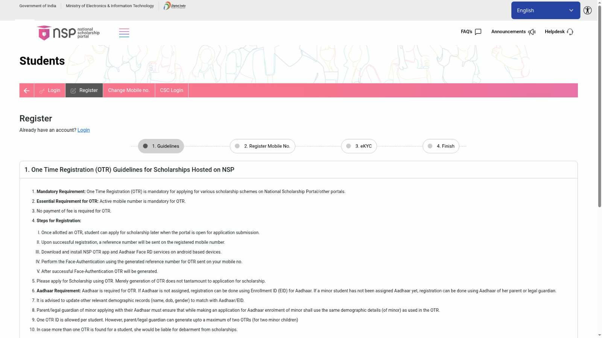
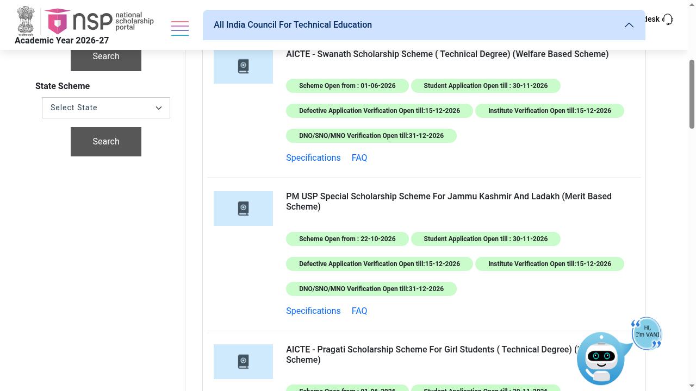

PM-USP Special Scholarship for J&K and Ladakh: renew on NSP by 30 November
Deadline check, 9 November 2026: The scheme-specific NSP listing now shows student applications open until 30 November 2026. The NSP homepage announcement still carries the earlier 31 October date. This guide follows the current scheme listing; recheck that row before you apply. No account login or application was tested.
Renewal applications for the Special Scholarship Scheme for the students of Jammu & Kashmir and Ladakh (SSS J&K and Ladakh, under PM-USP) are open on the National Scholarship Portal. The scheme-specific listing, checked on 9 November 2026, shows the window opened on 22 October and student applications open until 30 November 2026. The homepage announcement still carries the earlier date; see the deadline note below. If your family already receives this scholarship, renew before the deadline to keep the fee support and the Rs 1 lakh yearly maintenance allowance.
What is it?
SSS J&K and Ladakh is a central scheme run by AICTE for the Ministry of Education, running since 2011. It supports students domiciled in the Union Territories of Jammu & Kashmir and Ladakh who pass Class 12 from JKBOSE or CBSE schools located in the UTs and take up degree seats outside the UTs through AICTE counselling, on supernumerary seats. Family income must be up to Rs 8 lakh a year. There are 5,000 fresh scholarships each year: 2,070 for general degree courses, 2,830 for professional courses such as engineering, B.Sc Nursing, B.Pharm, B.Arch, hotel management and BA LLB, and 100 for medical and BDS.
How much does it pay?
From the official scheme specifications on NSP:
- Academic fee, paid to the institution: up to Rs 30,000 a year for general degree courses, up to Rs 1.25 lakh a year for professional courses, and up to Rs 3 lakh a year for medical and BDS.
- Maintenance allowance, the same for every stream: a fixed Rs 1.00 lakh a year, paid directly to the student in ten instalments by DBT through PFMS.
Renewal rules
From the official scheme specifications: the scholarship is renewed in later years subject to good conduct and the attendance prescribed by your institution. If you fail and are not promoted, the scholarship can continue in the following year, but a second failure ends it. If you miss the annual exam because of illness or another unforeseen reason, it can be renewed on a medical certificate accepted by the head of your institution. The scholarship is not paid twice for the same year of study.
Renewal deadline: 30 November 2026
Checked on the live NSP All Scholarships page on 9 November 2026, under All India Council For Technical Education. The PM USP Special Scholarship Scheme For Jammu Kashmir And Ladakh row shows:
- Scheme open from: 22 October 2026.
- Student application open until: 30 November 2026.
- Defective-application and institute verification open until: 15 December 2026.
- DNO/SNO/MNO verification open until: 31 December 2026.
The NSP homepage announcement still says student applications close on 31 October, with the earlier verification dates. That conflicts with the current scheme row. We use the scheme-specific listing here, but applicants should recheck that row and their own renewal dashboard before submitting. Verification dates are not student submission deadlines. No personal account was accessed.
How to renew on NSP: step by step
The public entry route was originally checked on 24 October 2026; the scheme deadline was rechecked on 9 November 2026. Steps after login were not checked by us.
- Open scholarships.gov.in (Academic Year 2026-27 is live) and log in with your OTR ID. If you have never registered, complete One Time Registration first from the Students section: register your mobile number, then finish eKYC with the NSP OTR app and Aadhaar face authentication. Registration is free.
- In your dashboard, open the Renewal application for Academic Year 2026-27.
- Choose the PM USP Special Scholarship Scheme for Jammu Kashmir and Ladakh.
- Fill the form and upload the documents it lists.
- Submit by 30 November 2026, after checking the current deadline in your scheme row and renewal dashboard. Track the application in the same dashboard; institute and district/state verification happen after you submit.


Steps inside your own NSP login are not shown as screenshots. Generating an OTR alone is not an application - you must still log in and submit the renewal.
Fresh applicants
The current NSP window is described by the portal as renewal applications. Admission-year applications for this scheme happen earlier through AICTE counselling for the supernumerary seats; check the scheme entry on NSP and the AICTE J&K scholarship pages when the next admission round opens.
Video guides
We searched YouTube on 24 October 2026 for a step-by-step renewal video for this scheme on the current NSP OTR portal in English and in Malayalam. The videos we found cover older portal versions or could not be verified to match the current portal, so we are not linking any rather than risk outdated or unrelated instructions.
Cost, eligibility and limits
| Cost to apply | Free. |
|---|---|
| Amounts | Fee up to Rs 30,000 / Rs 1.25 lakh / Rs 3 lakh a year by stream, plus a fixed Rs 1.00 lakh a year maintenance allowance. |
| Who | Existing scholars: J&K or Ladakh domicile students admitted under the scheme's supernumerary seats outside the UTs. |
| Renewal conditions | Good conduct, prescribed attendance, promotion to the next class; a second failure ends the scholarship. |
Stay safe
- Apply only on scholarships.gov.in.
- Never pay an agent.
Frequently asked questions
What is the renewal deadline?
30 November 2026, per the scheme-specific NSP listing checked on 9 November 2026. The homepage announcement still carries 31 October, so recheck the scheme row and your renewal dashboard. The later December dates are for verification.
How much is the scholarship?
Academic fee up to Rs 30,000 a year (general degree), Rs 1.25 lakh (professional courses) or Rs 3 lakh (medical/BDS), paid to the institution, plus a fixed Rs 1.00 lakh a year maintenance allowance paid to you.
I failed this year. Do I lose the scholarship?
Not immediately. The specifications allow the scholarship in the following year after one failure, but a second failure ends it.
Can I apply fresh now?
The portal describes the current window as renewal. Fresh applications happen with the admission-year AICTE counselling round.
Sources: National Scholarship Portal, NSP All Scholarships (dates), SSS J&K and Ladakh scheme specifications. Deadline and homepage announcement rechecked 9 November 2026; scheme specifications last read 24 October 2026.